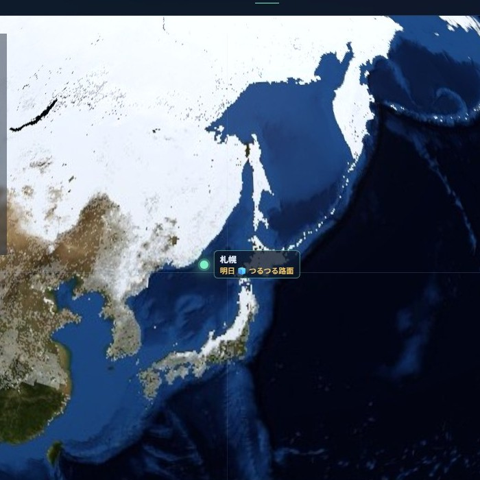
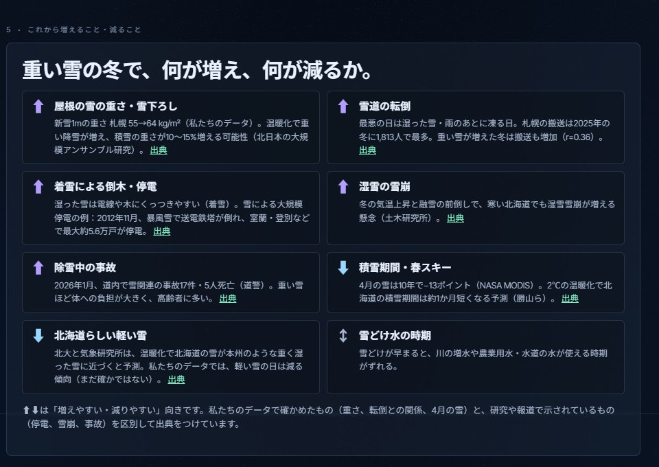
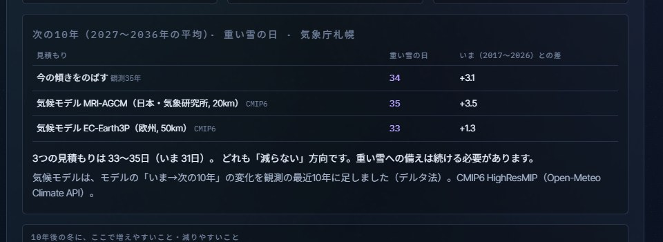
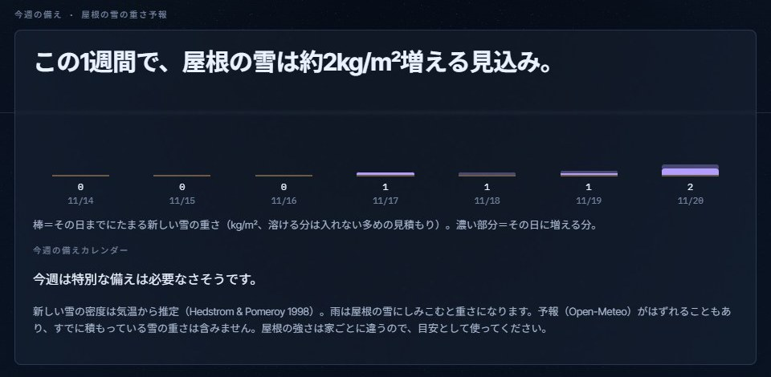

NASA Space Apps 2026 · 札幌 · Be An Earth System Trend Detective
北海道の軽い雪は、
重い雪に変わりつつあるのか？
2025年の冬、札幌では 1,813人 が雪道で転んで
救急搬送されました（過去最多）。
いちばん多い日は、湿った雪や雨が凍った日でした。
チーム Snow Trend Detective キム・ドヒョン（韓国からオンライン）
どうやって調べたか
−5℃以下さらさらの 軽い雪
−2℃より上水を多く含んだ 重い雪
1992〜2026年、35回の冬の雪の日を一日ずつ数えました。
偶然かどうかは、500回のシャッフル検定・多重比較の補正・基準を変えた確認で確かめました。
わかったこと
気象庁10か所すべてで
重い雪の日が増加
同じ水で積もる雪が減少＝
雪そのものが重く
屋根の新雪1mの重さ
札幌 55→64 kg/m²
4月の雪（NASA衛星）
10年で−13ポイント
雪の日の数は、札幌で 64→64日。同じ雪が、より暖かいときに降っています。
なぜ・何が起きるか
気温 10年で +0.3℃ → 46%
水分（冬の降水）も増加 → +20%
北極振動・エルニーニョは、35年の傾きがなく原因ではありませんでした。
国の報告書「日本の気候変動2025」と同じ方向です。

これから・どう備えるか

今の傾き＋日本と欧州の気候モデル（過去35年で確かめた）＝3つの見積もり

屋根の雪の重さ予報と、⚠️の前日の備えカレンダー（砂まき・高齢の方の雪かき支援）
だれが使うか・試してください
🏠 市民：⚠️の前日に滑り止め・屋根の雪下ろし
🏛️ 市・除雪：変わりやすい街から砂まき・除雪を先に（約286億円の使い方）
🤝 地域の支援：重い雪の日に高齢の方の玄関前を
⛷️ スキー場：早まる雪どけに合わせた計画
中間発表のあと：世界モード、原因の分析、影響、気候モデル、今週の備えを追加しました。
審査員の皆さんの街も
押してみてください